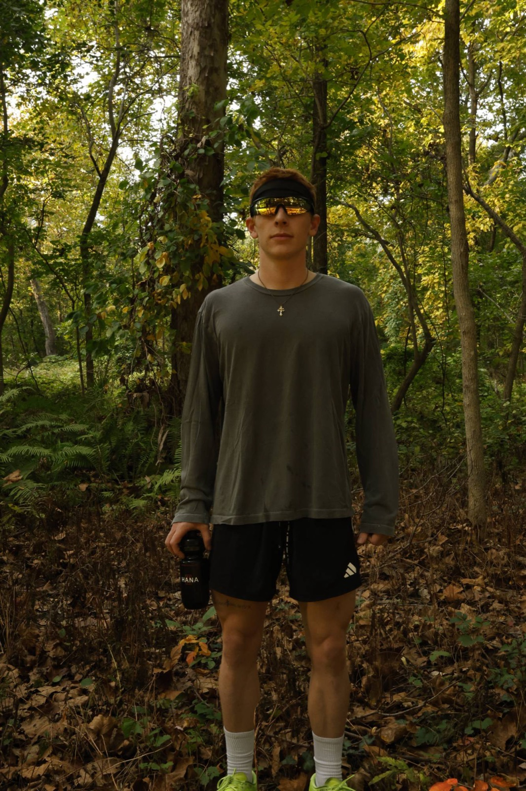
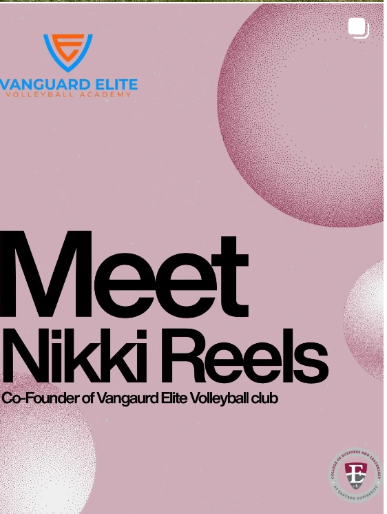

Master Your Rotation is a campaign concept for Nike Campus. It moves runners from buying one shoe to running a weekly rotation, with a different shoe for each kind of run, built around a seven-day Nike Campus Tour in Los Angeles, New York, London, Shanghai, Seoul and Mexico City.
- Role
- Concept project. Strategy, creative direction and channel plan.
- What I did
- The campaign objective of $15M in rotation sales in 90 days at a 4.0x return on ad spend, and the funnel maths behind it. The Campus Tour experience, a quiz-led customer journey, the visual direction and messaging, and the channel plan and measurement.
HANA is a Chinese-inspired tea sports hydration brand, built to tackle the problems we face as athletes in Asia. The goal is the cleanest hydration possible, without compromising on flavour or nutritional value.
- Role
- Founder. A personal project, run as a hybrid branding consulting project. January 2026 to now.
- What I did
- Full market research into the sports nutrition industry, which shaped the brand positioning, core value pillars and creative strategy. A full brand guideline covering the logo, colour, type, illustration, packaging, social templates and website. 3D packaging concepts and campaign posters. Brand films shot on location, and the website for drop 001.

Third Culture Kid Run Club is the most international run club for Gen Z. Every Saturday, whichever city you are in. Open to everyone, and a home for anyone who grew up in the in-between.
- Role
- Social Media and Brand Strategist, freelance and remote. July 2026 to now.
- What I did
- Brand strategy for one club across 25+ cities. Content planning, editing and scheduling. Run leads film their own city and I turn it into reels. I also wrote the rule book: colour, type, logo and a template for every post type, so every city looks like the same team.
- Result
- 3.19M+ views and 7,300+ new followers in 90 days, taking the club past 11K followers. Reels I edited reached 1.22M+ views and 18.7K+ engagements in a single 30-day cycle.
The social media for Eastern University’s business school. A new content system of templates, editorial layouts and short-form video that makes the college look professional and still talks to students the way they talk.
- Role
- Creative Strategist, internship. September 2026 to now.
- What I did
- Overhauled the brand standards, moving the account off static templates toward clean visual assets, editorial layouts and short-form video. Built templates and style guidelines for posts, reels and stories. Planned future events and campaigns from student survey insights.
- Result
- A 30-day campaign reached 88.5K views.



My own short-form videos about training for endurance sport as a college student, from a bike trainer in a dorm room.
- Role
- Creator. Filming, editing and posting.
- What I did
- Tested hooks on my own account before using them for brands. The same room tour, framed two ways: once around me, once around a dorm almost everyone has lived in.
- Result
- “pov: your average college dorm” reached 811K views, 23.7K likes and 2,280 shares. The version framed around me reached 7.7K.